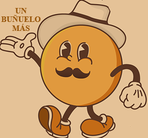

# unbunuelomas.git.io
proyect website
<!doctype html>
<html>
<head>

<center><title> <h1><font color ="blue"> UN BUÑUELO MÁS </title> </font>
</head>
<body>

<strong><h1> UN BUEÑUELO MAS </h1></strong>
<p> <h3> EN ESTA PAGINA ENCONTRAMOS: </p>
<p> <h3> UNA VARIEDAD DEDIFERENTES BUEÑUELOS INNOVADORES </p>
<p> <h3> Mision:
Es promocional una expriencia culinaria exepional a travez de la elaboracion y venta de buñuelos de alta calidadñ.Algunos elemntos claves de la mision de nuestra empresa son:

xOfrecer buñuelos de la mas alta calidad, echos con ingredientes de primera.La empresa se compromete a utilizar solo los mejores ingredintes para crear buñuelos con un sabor autentico y una textura irresistible.

xPreservar y difundir la tradición delos bueñuelos.La empresa busca honrar y mantener viva la tradicion de los buñuelos, compartiendo esta deliciosa receta con los consumidores.

xBindar un servicio exepcional, agradable para los clientes.La empresa se enfoca en ofrecer un ambiente acogedor y un trato personalizados a cada cliente acogedor y un trato personalizado cada cliente para que disfruten su visita.

xContribuir al desarrollo economico y social de la comunidad.La aspira a ser un miembro activo y responsable de la comunidad, generando empleados y apoyando iniciativas locales

Version:

xSer reconocida como la principal referencia en la elaboracion y venta de buñuelos tradicional ofreciendo una experiancia culinaria y exepcional que traciende geeneraciones. 

xConvertirnos en marca lider de buñoelos a nivel local y expandirnos a nivel nacional.

xLa empresa aspira a consolidarse como la opcion preferida  por los clientes de su mercado local. Y posteriormente  expandir nuestra presencia en otras regiones del pais.

xInnovar constantemente la elaboracion de buñuelos. Manteniendo la auntentisidad de la receta tradicional.

xSer un referente la peservacion y difusión
 de gastronomia local.
 La empresa busca  convertirse en un embajador la traducion culinaria de la region.

xCrear una experiencia de consumo memorable y diferencia para nuestros clientes.La empresa aspira que cada visita a sus establecimiento sea una experiencia unica y gratificante.

xCombertirse en una empresa socialmente unica responsable y sostenible.

xLa empresa se esforzara para ser un modelo a responsabilidad social y sostenibilidad, contribuyendo al bienestar de la comunidad y el medio ambiente   
 	</p>    	
<h3> <font color="green"> NUESTROS COMBOS </font>
   <p> <h2> COMBO AMATEUR </b>
   <p> <h2> COMBO PRO </b>
   <p> <h2> COMBO MUNDIAL </b>
   <p> <h2> COMBO CAMPEON </b>
   <p> <h2> COMBO LEGENDARIO </b> 
<body bgcolor="#e9954e"text="#2333f5"></cen
